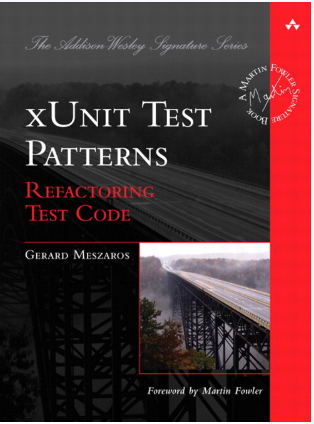
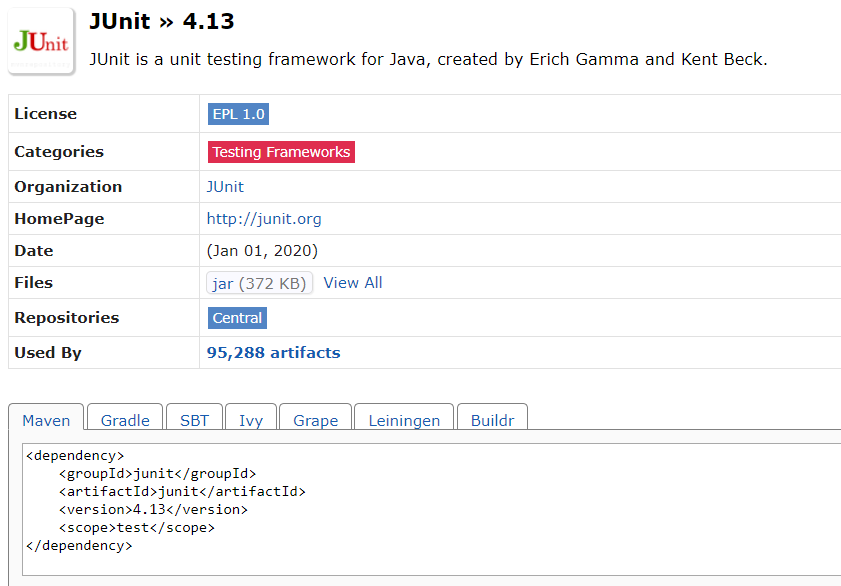

Testes unitários com JUnit
Sobre Evandro
Projetos:
IN100
PDV
Controlaí
Squad Esteira II
Java
Maven, Gradle
Spring MVC, data JPA, Batch, actuator, boot
SQL Server, MySql, MariaDB, Postgresql
MongoDB, Cassandra, Redis
APM, new relic, appDynamic, Prometheus
Camel, Kafka, git, JUnit
Testes unitários
O que é ?
Por quê ?
Como ?
Teste unitário
É um nível de teste, em que a unidade e comportamentos individuais são testados, tem como objetivo validar que cada unidade funcione conforme projetado.
Por quê ?
-
Um código testado é mais confiável
-
Previne contra "BUG'S"
-
Permite alteração sem medo
-
Gera e preserva um "conhecimento" sobre as regras de negócios do projeto
-
Qualidade de código - S.O.L.I.D
-
...
Como ?
JUnit
"É um framework que facilita o desenvolvimento e execução de testes unitários em um código java"
Vantagens
-
Verifica se cada unidade esta funcionando da forma esperada
-
Facilita a criação, execução automática e apresentação dos resultados
-
É free
Desvantagens
-
Métodos privados, estáticos e variáveis locais não podem ser testados
-
Nem todos os erros podem ser detectados pois os módulos são testados separadamente e posteriormente diferentes erros de integração podem aparecer
-
Não gera relátorio HTML
xUnit
Princípios de um teste unitário (F.I.R.S.T)
-
Fast - Um teste unitário deve ser executado rápido
-
Indepentent - Não deve depender de outro, podendo rodar em qualquer ordem
-
Repeatable - Pode ser executado quantas vezes quiser, mas trazendo o mesmo resultado
-
Self-Verifying - Auto verificavel, saber quando a execução foi correta e quando falhou
-
Timely - Deve ser criado no momento correto
Alguns macetes:
-
Comece pelos mais simples
-
Use apenas dados sufiicentes (não testes 10 condições se três forem sufiicentes)
-
Achou um bug? Não conserte sem antes escrever um teste que pegue
Incluindo como dependência
Assertivas
Assert.assertTrue(boolean) Assert.assertFalse(boolean) Assert.assertEquals(expected, actual) Assert.assertEquals(expected, actual, delta) Assert.assertSame(obj, obj) Assert.assertNotSame(obj, obj)
assertThat
Assert.assertThat(atual, Matcher) CoreMathers - Hamcrest matchers
Tratamento de erros (falha x erro)
@Test(expected = Exception.class) Assert.fail("erro") ExpectedException
Before/After
@Before @BeforeClass @After @AfterClass
Ignorando testes
@Ignore Assume
Suíte de tests
@RunWith(Suite.class) @SuiteClasses({ Test0.class, Test1.class, ..... })
Análise de cobertura
-
É a porcentagem de código coberta por testes automatizados.
-
Faz parte de um ciclo de feedback no processo de desenvolvimento.
-
Determina quais instruções forma executadas.
Por quê ?
-
Melhora a qualidade e previsibilidade do software.
-
Saber como nossos testes realmente testaram o código.
-
Saber se os testes são suficentes.
-
Manter a qualidade do teste durante o clico de vida de projeto.

Jacoco é uma biblioteca de código aberto para Java, criada pela Eclemma.
Gera relatórios de cobertura de código.
Plugin

target/site/jacoco/index.html

Dependências


É uma biblioteca de código aberto para java, que permite a criação, verificação e stubbing simulados
Vantagens
-
Possibilita criar mocks de classes concretas e interfaces
-
O setup de criação de mock é simples
-
Permite a verificação por meio de matchers
Desvantagens
-
É necessário uso da versão 1.6 ou superior do Java
-
Não é possivel criar mocks de classes final
-
Não é possivel fazer mocks de métodos estáticos ou privados

Maneiras de inicializar


Anotações
@Mock - Cria e injeta instâncias simuladas

@Spy - Espiona uma instância existente

@Captor - Deve ser criado uma instância de ArgumentCaptor para obter argumentos capturados

@InjectMocks - Usado para injetar mocks no objeto testado

Configurar comportamentos
when(listMock.add(anyString())).thenReturn(false);
when(listMock.add(anyString())).thenThrow(IllegalStateException.class);
when(listMock.size()).thenCallRealMethod();
doCallRealMethod().when(myList).add(any(Integer.class), any(String.class));
doReturn(false).when(listMock).add(anyString());
doThrow(NullPointerException.class).when(listMock).clear();
doNothing().when(myList).add(isA(Integer.class), isA(String.class));
PowerMockito
É uma Api para suporte ao Mockito
Provem a capacidade de criar mock para metodos final, static ou privados através da Api de Reflection do Java
Dependências

É necessário preparar os caso de testes para que funcionem com o PowerMockito

Cria um mock utilizando a API do PowerMockito

Diz para que sempre que um construtor sem argumentos for invocado o mock deverá ser retornado

Mock metodos estáticos

Definindo retorno